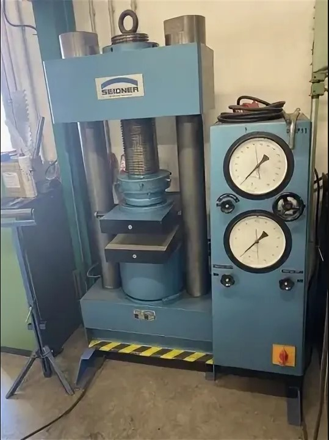

О нас
Испытательная лаборатория физико-механических свойств горных пород ИЛ ИП Шило аккредитована для выполнения соответствующих видов исследований (аттестат аккредитации № РОСС.NPO/S.IL-00251) Аттестат аккредитации подтверждает компетентность, беспристрастность и независимость испытательной лаборатории в соответствии с ГОСТ ISO/IEC 17025-2019 «Общие требования к компетентности испытательных и калибровочных лабораторий».
Сертификат о государственной аккредитации № РОСС.NPO/S.IL-00251.
Виды работ в нашей лаборатории.

Проведение испытаний и оборудование.
- Для проведения испытаний с целью определения различных физико-механических свойств горных пород и материалов в лаборатории ИЛ ИП Шило имеется пресса, позволяющие создавать максимальные нагрузки на образцы.
- Для проведения испытаний по нестандартным методам используются дополнительные уникальные устройства нагружения и центрирования образцов собственной разработки.
- Лаборатория обладает всем необходимым оборудованием для пробоподготовки образцов и определения физических свойств горных пород и материалов (плотность, пористость, гранулометрический состав и т.д.).
- Средства измерений, применяемые в исследованиях, имеют действующие свидетельства о поверке.
- В состав лабораторного парка оборудования входят также различные современные вспомогательные устройства и оборудование. Оборудование имеет соответствующие сертификаты о калибровке.
- За актуализацией нормативной документации, соблюдением сроков поверки и калибровки, качеством проводимых экспериментов и достоверности результатов исследований отвечает внедренная в лаборатории система менеджмента качества.
Менеджмент качества
Основной целью Испытательной лаборатории ИЛ ИП Шило, является обеспечение высокого качества испытаний, достоверности их результатов, независимой и беспристрастной оценки качества испытаний, посредством создания и поддержания стабильных условий, необходимых для эффективного функционирования системы менеджмента качества.
Лаборатория в своей деятельности руководствуется действующим законодательством РФ, стандартами (государственными, отраслевыми), санитарными правилами и нормами, внутренними документами, регламентирующими производственную и хозяйственную деятельность ИП ИЛ Шило, положением о лаборатории, руководством по качеству, документами по эксплуатации и техническому обслуживанию оборудования, а также документами, регламентирующими охрану труда и пожарную безопасность.
Основные задачи лаборатории при выполнении исследований:
- cоблюдать установившуюся профессиональную практику и сохранять высокое качество испытаний и исследований;
- неуклонно следовать в своей деятельности требованиям документов системы менеджмента качества и ГОСТ ИСО/МЭК 17025-2009 "Общие требования к компетентности испытательных и калибровочных лабораторий";
- постоянно повышать эффективность СМК;
- не участвовать в осуществлении видов деятельности, которые снизили бы доверие к беспристрастности лаборатории;
- по мере необходимости и возможности внедрять новые, современные средства измерения (СИ), испытательное оборудование (ИО) и вспомогательное оборудование (ВО), использовать в работе только актуальные нормативные и методические документы;
- развивать кадровый потенциал сотрудников лаборатории посредством участия в научных конференциях и симпозиумах, тематических выставках в рамках научных форумов, прохождением различных курсов повышения квалификации и участием в онлайн семинарах по темам квалифицированного функционирования лаборатории в части менеджмента и проводимых испытаниях;
- способствовать совершенствованию систем контроля качества в соответствии с требованиями действующих нормативных документов.
Контакты
Телефон: +7 (950) 144-67-05 +7 (904) 133-41-62
Email: anatol.shilo@yandex.ru
Адрес: г. Иркутск, ул. Якоби, д. 12 пом. 3
Режим работы: Пн‑Пт: 9:00–18:00